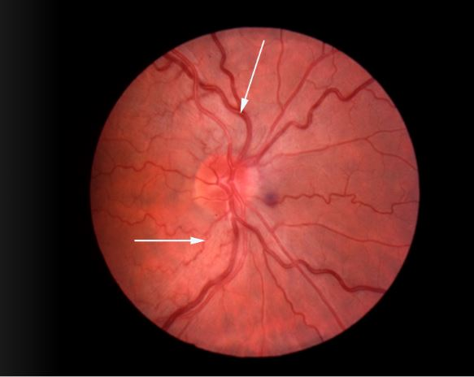
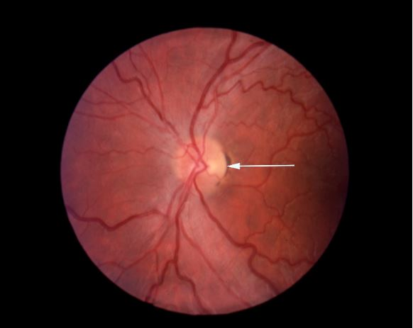
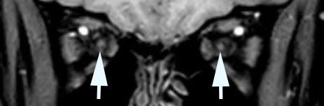

Leber Hereditary Optic Neuropathy

- Subacute—usually irreversible--visual loss affecting both eyes consecutively and sometimes simultaneously
- Caused by mitochondrial mutation at positions 11778, 3460, 14484, or 14459
- Transmitted maternally (because mother provides mitochondria)
- Men aged 15 to 40 years are most at risk, but women and older men are also vulnerable
- Vision loss usually only clinical manifestation
- No effective treatment
- Cardiac conduction defects sometimes
-
Core features
- One eye loses vision, then other eye loses vision, usually with a delay of weeks to months
- Central or centrocecal scotomas
- In active phase, affected optic disc may appear hyperemic and show thickened nerve fiber layer and dilated papillary capillaries
- Late after active phase, affected optic disc will show temporal pallor
 -
Trap: afferent pupil defect not always present—even when only one eye is affected—leading to misdiagnosis of psychogenic vision loss if optic discs appear normal
-
Tip: optic discs do not leak fluorescein because optic disc elevation is based on axonal stasis, not on blood-brain barrier breakdown
- MRI may show multifocal high T2/FLAIR abnormalities of uncertain significance
- In chronic phase, MRI will show small caliber optic nerves

- Optic neuritis
- Compressive optic neuropathy
- Posterior ischemic optic neuropathy
- Non-arteritic ischemic optic neuropathy
- Paraneoplastic optic neuropathy
- Infiltrative optic neuropathy
- Maculopathy
- Psychogenic visual loss
- Look for classic peripapillary nerve fiber layer thickening and telangiectasia in acutely affected eye and even in unaffected eye (“pre-eruptive stage”)
- Order fluorescein angiography to exclude optic disc leakage, which would indicate inflammatory or ischemic optic neuropathy
- Order orbit-based MRI to exclude inflammatory or compressive optic neuropathy
- Order blood test for mitochondrial DNA mutation, realizing that laboratory results may be delayed for months
- Advise cessation of smoking and alcohol ingestion, which generate free radicals that exacerbate mitochondrial dysfunction
- Offer treatment with idebenone, coenzyme Q10, vitamin E, and B vitamins, although evidence of benefit is weak
- Provide genetic counseling, advising males that they cannot transmit disease, advising mothers that all children--especially males—are at risk at any age
- Visual loss is usually irreversible, but some visual recovery may occur in mitochondrial DNA mutations at loci 14484 and 3460
- Evidence of treatment benefit still lacking
- Patients who suffer apparent nutritional-deficiency or alcoholism-related optic neuropathy may carry Leber mitochondrial DNA mutation